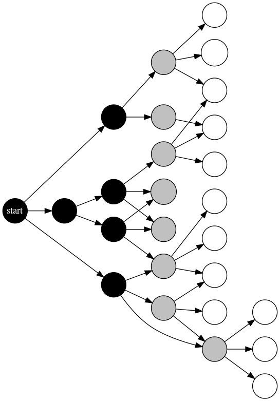
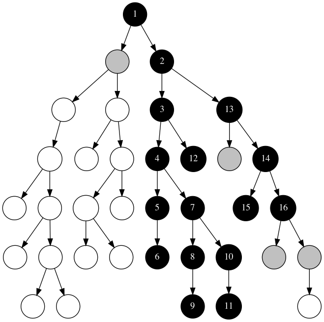

Intermedio: Representación y Búsqueda
Adolfo De Unánue Adolfo De Unánue Adolfo De Unánue
Introduction and Recap of Last Class
Anuncios
Repaso de la última clase
Lecture Outline
Abstracción
Espacio de Estados
Grafo: Vocabulario
Representación de redes
Matriz de Adyacencia
Lista de Adyacencia
Ejemplo

Se puede representar como lista de adyacencia como sigue:
graph = {}
graph["A"] = {"B", "C"}
graph["B"] = {"D", "E", "C"}
graph["C"] = {"E"}
graph["D"] = {"E", "F"}
graph["E"] = {"F"}
graph["F"] = set()
graph["G"] = set()
Usando grafos y búsqueda

Figure 2: Solucionando problemas usando un algoritmo de grafos. En negro los nodos explorados, en gris los nodos finales de los caminos (i.e. frontera), en blanco los nodos no explorados.
Algoritmo genérico de búsqueda
Pseudocódigo
def search(G, start, goal):
frontier = {start}
while frontier is not None:
path:{start, ...., n_k} = select_and_remove(frontier) # extraer el path de la frontera
if goal(n_k):
return path:{start, ..., n_k} # el path es la solución (quizá se puede intentar otra solución)
frontier = frontier U ({start, ...., n_k, n} : (n_k, n) \in A}) # por cada vecino agregar a la frontera el path a.k.a "expander"
return None # No hay solución
Intermezzo: Colas y pilas
Stack o Pila

Imágenes tomadas de: https://stackoverflow.com/a/35031174/754176
Queue o Cola

Imágenes tomadas de: https://stackoverflow.com/a/35031174/754176
from collections import deque
cola = deque()
pila = deque()
for i in [1,2,3,4]:
cola.append(i)
pila.appendleft(i)
cola
deque([1, 2, 3, 4])
cola.popleft()
1
pila
deque([4, 3, 2, 1])
pila.popleft()
4
Estrategias de Búsquedas no informadas
Breadth-First search

Figure 5: Orden en el cual se expanden los caminos en BFS
def BFS(G, start, goal):
"""
Breadth First search
G es una lista de adyacencia
start es el nombre del nodo
goal es un predicado que devuelve true si el nodo es la solución
"""
frontera = deque() # En BFS la frontera es una cola
# Agrego por a derecha, ya que es una cola
frontera.append((start, [start])) # nodo y path
while frontera:
nodo, path = frontera.popleft() # Extraigo por la izquierda
for vecino in set(G[nodo]) - set(path): # Vecinos que no están en el path
if goal(vecino):
yield path + [vecino]
else:
frontera.append((vecino, path+[vecino]))
print(frontera)
return None
Depth-First search

Figure 6: Orden en el cual se expanden los caminos en DFS
DFS es apropiado cuando:
def DFS(G, start, goal):
"""
Depth First search
G es una lista de adyacencia
start es el nombre del nodo
goal es un predicado que devuelve true si el nodo es la solución
"""
frontera = deque() # En DFS la frontera es una pila
# Agrego por la izquierda es una pila
frontera.appendleft((start, [start])) # nodo y path
while frontera:
nodo, path = frontera.popleft()
for vecino in set(G[nodo]) - set(path): # Vecinos que no están en el path
if goal(vecino):
yield path + [vecino]
else:
frontera.appendleft((vecino, path+[vecino]))
print(frontera)
return None
Estrategias de Búsqueda heurística
Una función heurística \(h(n)\) regresa un número real no negativo que estima el costo de del camino de menor costo desde el nodo \(n\) al nodo meta.
El función \(h(n)\) es admisible si siempre es menor o igual que el costo real del camino de menor costo del nodo \(n\) al nodo meta.
Búsqueda A*
A* usa: (1) el costo del camino, el de menor costo primero, e (2) información heurística greedy primero en el búsqueda, para seleccionar que camino debe de expandir.
A* , para cada camino\(p\) de la frontera, define la función:
\[ \underbrace{\underbrace{n_o \xrightarrow{real} }_\text{costo(p)} n \underbrace{\xrightarrow{estimado} n_g}_\text{h(p)}}_\text{f(p)} \]
A* se implementa usando el algoritmo genérico pero la frontera es una cola ordenada por \(f(p)\).
Branch and Bound
Branch and bound combina DFS con información heurística para encontrar caminos óptimos \(h(n)\).
En la implementación, se mantiene el camino de menor costo al nodo meta encontrado y su costo. Si la búsqueda encuentra un nuevo camino \(p\) cuyo costo es \(f(p) = costo(p) + h(p)\) mayor que el encontrado, \(p\) es podado. Si es menor que el costo encontrado, la nueva solución es guardada.
def heuristica(nodo):
""" No hay heurística """
return 0
def costo(path):
""" Suponemos que el costo es 1 en cada arco """
return len(path)
def DF_branch_and_bound(G, start, goal, costo, heuristica, bound=float('inf')):
best_path = None
best_cost = bound
frontera = deque() # En BFS la frontera es una pila
# Agrego por a derecha, ya que es una cola
frontera.append((start, [start])) # nodo y path
while frontera:
nodo, path = frontera.popleft() # Extraigo por la izquierda
if costo(path) + heuristica(nodo) < best_cost:
print(f"Expandiendo {path} con costo {costo(path)}")
if goal(nodo):
best_path = path
best_cost = costo(path)
print(f"Nuevo mejor camino encontrado: {path}, costo: {costo(path)}")
else:
for vecino in set(G[nodo]) - set(path): # Vecinos que no están en el path
frontera.appendleft((vecino, path+[vecino]))
else:
print(f"{path} ha sido podado")
return best_path, best_cost
Relax don't do it!
Por ejemplo en el caso de del \(0-1\) knapsack
Datos de entrada (archivo data/ks_4_0),
4 11
8 4
10 5
15 8
4 3
se puede expresar como
Y en python simplemente como
from collections import namedtuple
from operator import add, sub
from functools import reduce
from collections import deque
Item = namedtuple("Item", 'index peso valor')
capacidad = 11
items = [Item(1, 4, 8), Item(2, 5, 10), Item(3, 8, 15), Item(4, 3, 4)]
Nuestros nodos en el grafo, representan estados del knapsack:
class Nodo:
def __init__(self, items, nivel):
self.nivel = nivel
self.items = items
self.valor = reduce(add, [item.valor for item in items], 0)
self.peso = reduce(add, [item.peso for item in items], 0)
self.estimacion = None
def __repr__(self):
return f"Nodo(valor={self.valor}, peso={self.peso}, estimacion={self.estimacion}, nivel={self.nivel})"
def __str__(self):
return f"Nodo(valor={self.valor}, peso={self.peso}, estimacion={self.estimacion}, items={self.items}, nivel={self.nivel})"
Podemos "relajar" algunas cosas, e.g. la capacidad (es decir, podemos tomar todo) o quizá restricción de que sean \(0\) o \(1\) las variables de decisión (podemos tomar fracciones de los objetos).
Si relajamos la capacidad podemos definir la función heurística \(h(n)\): valor total de los objetos que potencialmente tomaremos, si es infinita la capacidad.
Recuerda, no estamos haciendo la capacidad infinita, estamos relajando la restricción de capacidad y esto significa que estamos estimando de manera optimista, bajo este supuesto.
def bottomless_knapsack_heuristic(nodo, items, capacidad):
"""No constraint in the capacity (greedy)"""
if nodo.peso > capacidad:
return 0
sorted_items = sorted(items[nodo.nivel+1:], key=lambda item: item.valor, reverse=True)
return reduce(add, [item.valor for item in sorted_items], nodo.valor)
Hasta ahora no habíamos visto un caso de ir generando el grafo mientras hacíamos la búsqueda, esta es nuestra oportunidad
def generar_vecinos(nodo, items, capacidad, optimistic_estimate):
"""Genera dos ramas, se elije o no el item siguiente en la lista de items"""
max_level = len(items) - 1
if nodo.nivel != max_level:
siguiente_nivel = nodo.nivel + 1
siguiente_item = items[siguiente_nivel]
taken = Nodo(items=nodo.items + [siguiente_item],
nivel=siguiente_nivel)
taken.estimacion=optimistic_estimate(taken, items, capacidad)
not_taken = Nodo(items=nodo.items,
nivel=siguiente_nivel)
not_taken.estimacion=optimistic_estimate(not_taken, items, capacidad)
return (not_taken, taken)
else:
return []
Finalmente, el algoritmo de branch and bound es:
def knapsack_DF_branch_and_bound(items, capacidad, optimistic_estimate, bound=float('-inf')):
""" optimistic_estimate es una función que implementa la heurística """
mejor_path = []
mejor_valor = bound
# Iniciamos con el knapsack vacío
start = Nodo(items=[], nivel=-1)
start.estimacion = optimistic_estimate(start, items, capacidad)
frontera = deque() # En BFS la frontera es una pila
# Agrego por a derecha, ya que es una cola
frontera.append((start, [start])) # nodo y path
while frontera:
nodo, path = frontera.popleft() # Extraigo por la izquierda
for vecino in generar_vecinos(nodo, items, capacidad, optimistic_estimate): # Tomar o no tomar el siguiente objeto
# Si el peso acumulado es menor que la capacidad del knapsack y el valor es más grande
# que el valor previamente encontrado, actualizar
if vecino.peso <= capacidad:
if vecino.valor > mejor_valor:
mejor_path = path + [vecino]
mejor_valor = vecino.valor
print(f"Mejor solución encontrada: {vecino.items} con valor {mejor_valor}")
# Si el valor estimado es más grande que la solución encontrada,
# agregarlo a la lista para considerarlo
if vecino.estimacion >= mejor_valor:
#print(f"Agregamos {vecino} a la frontera")
frontera.appendleft((vecino, path+[vecino]))
else:
print(f"{vecino} ha sido podado (bounds)")
else:
print(f"{vecino} ha sido podado (infeasible)")
print("="*20)
return mejor_path, mejor_valor
Ejemplo
Tomado de Artificial Intelligence Foundations of computational agents, Poole and Mackworth, segunda edición
robot_domain = { 'o109': {'o111', 'o119'},
'o103': {'o109', 'b3', 'ts'},
'o111': {},
'ts': {'mail'},
'mail': {},
'b3': {'b4', 'b1'},
'b4': {'o109'},
'b1': {'b2', 'c2'},
'b2': {'b4'},
'c2': {'c3', 'c1'},
'c1': {'c3'},
'c3': {},
'o119': {'storage', 'o123'},
'storage': {},
'o123': {'r123', 'o125'},
'r123': {},
'o125': {}
}